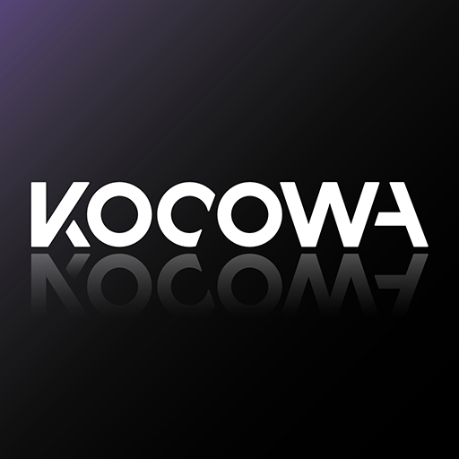

Doramas são novelas ou dramas asiáticos, nossas atuais indicações possuem apenas doramas coreanos, porém temos a premissa de futuramente aumentar nosso catálogo de dicas, você pode acessar ele ali em cima no menu.

Todos conhecem a Netflix, porém para quem não conhece, a netflix é um aplicativo e site de streaming que começou a produzir doramas atualmente, porém ela é muito mais conhecida por outras produções, tanto internacionais quanto nacionais. Sendo uma das maiores empresas que trabalham com streaming.

O Viki é um site e aplicativo onde você pode assistir a diversos doramas de forma gratuita! Todas das novelas são legendadas em grupos de fãs para fãs.
Assim como o Viki é um site e aplicativo especializado em programas asiáticos, mais especificamente coreanos. Diferentemente do Viki é um aplicativo mais profissional e as legendas e dublagens foram feitas por equipes de tradutores e dubladores.